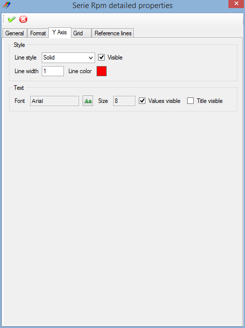

The 'Y Axis' tab contains serie Y axis properties.

Style
- Line style: Select the Y axis line style. Check 'Line styles' section for details.
- Visible: Y axis visibility flag. Check that box to make the Y axis visible.
- Line width: Set the width of the Y axis line.
- Line color: Double click the colored square to open the color selection dialog and select the Y axis line color.
Text
- Font: Click the 'Font' button to open the font selection dialog, select a font and set its size and attributes and click 'OK'.
- Value visible: Y axis values visibility flag. Check that box to make the Y axis values visible.
- Title visible: Y axis title visibility flag. Check that box to make the Y axis title visible.
Example of a graphic with a customized Y axis.


Created with the Personal Edition of HelpNDoc: Produce Kindle eBooks easily